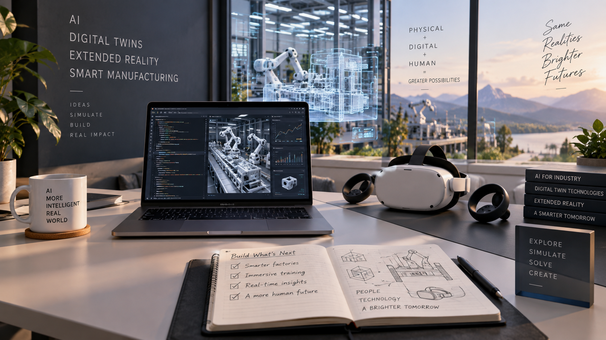
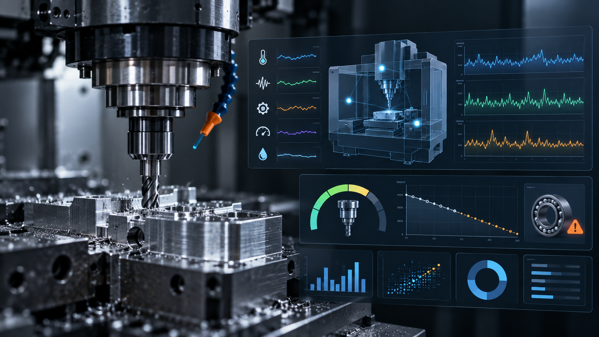
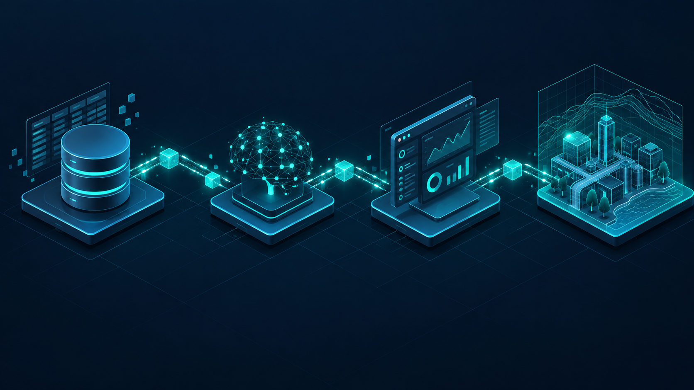
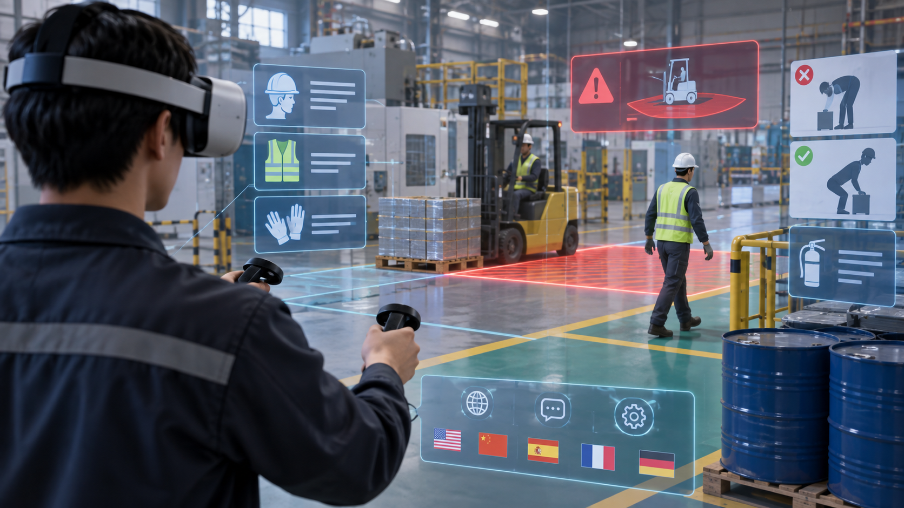
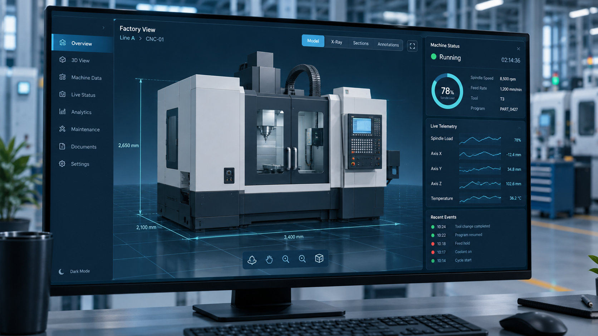
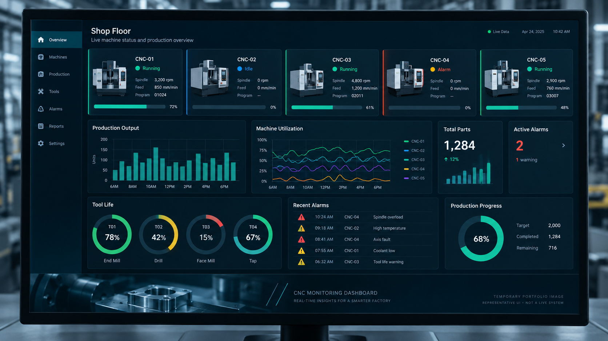
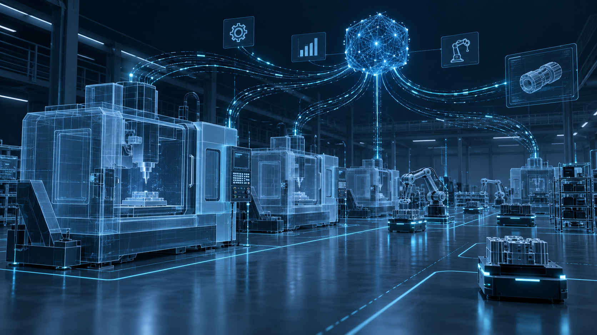

유수연
남서울대학교 가상현실학과
- 관심 분야
- AI / Smart Factory / Digital Twin / XR
- 강점
- 데이터부터 서비스와 3D 인터페이스까지 연결
- 개발 관점
- 기술 자체보다 실제 사용자와 운영 환경을 함께 고려
GENERAL PORTFOLIO
제조 AI, 데이터 분석, 디지털 트윈, XR 콘텐츠까지 서로 다른 기술을 하나의 사용자 경험으로 연결합니다. 데이터에서 시작해 웹과 3D, VR까지 확장하는 프로젝트를 진행해 왔습니다.

ABOUT
데이터를 단순히 분석하는 데서 끝내지 않고, 사용자가 이해하고 판단하고 행동할 수 있는 서비스와 인터페이스로 연결하는 것을 목표로 합니다.
남서울대학교 가상현실학과
PROJECTS
카드에는 프로젝트의 핵심 정보만 담고, 카드를 선택하면 구현 과정과 결과를 상세 화면에서 확인할 수 있습니다.
실제 CNC/MCT 설비 데이터를 분석해 공구 교체 위험을 예측하고, 웹 대시보드와 3D·VR 환경까지 연결한 프로젝트입니다.


NOAA ENSO 시계열 데이터를 활용해 엘니뇨·중립·라니냐 상태와 향후 발생 가능 시기를 예측했습니다.

한국 전통 공포 요소와 VR 몰입감을 결합한 공포·미스터리 게임입니다.

실제 공간에서 상품을 3D로 확인하고 입찰할 수 있도록 설계한 혼합현실 기반 온라인 경매 서비스입니다.

RAG와 CAG를 직접 구현하고 정확도와 응답속도 등 여러 지표를 동일 환경에서 비교했습니다.

강화학습 Agent가 리듬게임의 상태를 관찰하고 자동으로 플레이할 수 있는 환경을 구현했습니다.
Python 기반 이미지 처리 프로그램의 기능과 UI, 처리 성능을 개선했습니다.
실제 수출신고 업무 흐름을 분석해 관계형 데이터베이스와 업무 질의를 설계했습니다.
미니카 조립부터 데이터 수집, CNN 학습과 차량 추론까지 자율주행의 전체 흐름을 실습했습니다.
EXPERIENCE
프로젝트 구현뿐 아니라 실제 외부 프로젝트의 일정 관리, 다국어 리소스 적용, VR 빌드 문제 해결까지 경험했습니다.
Unreal Engine 기반 산업안전 VR 콘텐츠의 번역·TTS·UI 제작 팀을 이끌며 언어별 리소스와 품질 기준, 실제 VR 빌드 문제까지 관리했습니다.
AWARDS
수상 결과뿐 아니라 어떤 작품과 서비스를 만들었는지 카드 선택 후 상세 화면에서 확인할 수 있습니다.
한국게임학회 × 넥슨게임즈
인간·기술·AI·자연의 관계를 미래의 기계 문명 유적을 통해 표현한 Blender 기반 3D 아트 작품입니다.
한국영상학회 Next Generation
도시 쓰레기 문제 해결과 시민 참여를 연결한 위치 기반 AR 기능성 게임입니다.
한국디지털콘텐츠학회
LLM의 정확성과 응답 효율을 개선하기 위해 RAG와 CAG 구조를 구현하고 비교한 연구입니다.
경남콘텐츠페어 AI 영상 공모전
웹툰의 서사와 음악, 생성형 AI 영상을 결합한 애니메이션 엔딩 스타일 뮤직비디오입니다.
한국융합학회 ICCT2024
꿈을 잃어가는 청소년 문제를 선택과 결과를 통해 경험하도록 만든 Unity 기반 기능성 게임입니다.
SKILLS
Python, Pandas, NumPy, PyTorch, scikit-learn, LSTM, 데이터 전처리
Flask, FastAPI, REST API, MSSQL, SQL, pyodbc
HTML, CSS, JavaScript, 데이터 시각화, 반응형 UI
Three.js, Blender, 실시간 3D 시각화
Unreal Engine, Unity, Blueprint, VR · MR Interaction
Git, GitHub, 로그 분석, 문서화, 프로젝트 협업
CONTACT
데이터와 AI, 웹, 실시간 3D와 XR을 연결해 사용자의 판단과 경험을 개선하는 시스템을 만들고자 합니다.